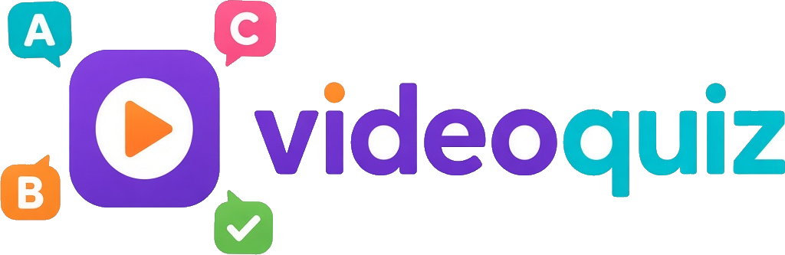

Choisir une vidéo
Parcourez les vidéos proposées pour trouver une idée, ou renseignez un lien YouTube, Vimeo, Dailymotion, RUTUBE ou TikTok.

Ouvrir le tutoriel interactifVideo Quiz transforme le visionnage en entraînement actif. Choisissez une vidéo, préparez les questions qui vous aideront à la comprendre, puis retrouvez vos résultats dans ce navigateur.
Parcourez les vidéos proposées pour trouver une idée, ou renseignez un lien YouTube, Vimeo, Dailymotion, RUTUBE ou TikTok.
Ajoutez un titre puis choisissez un quiz préparé, une révision progressive ou un QCM express selon votre façon d’apprendre.
Rédigez les questions et les choix de réponse. En révision progressive, vous pouvez compléter la grille au fil du visionnage.
Lancez la vidéo, répondez aux questions, puis consultez vos résultats et votre progression dans le suivi de la démo.